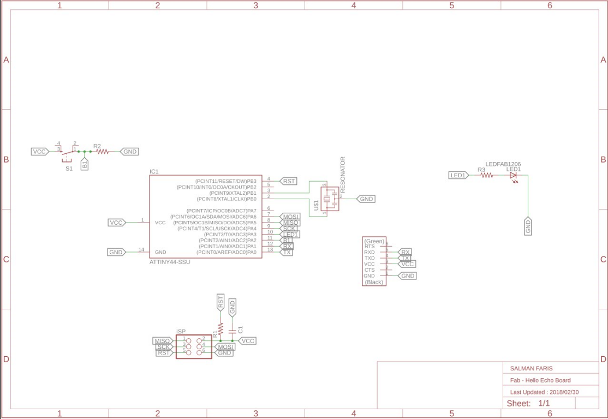
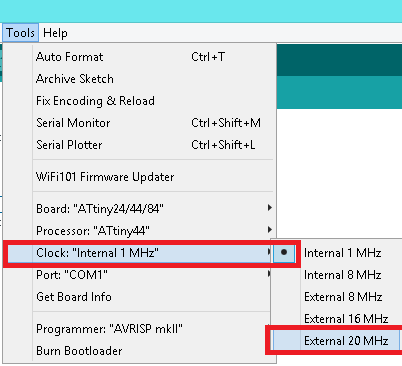
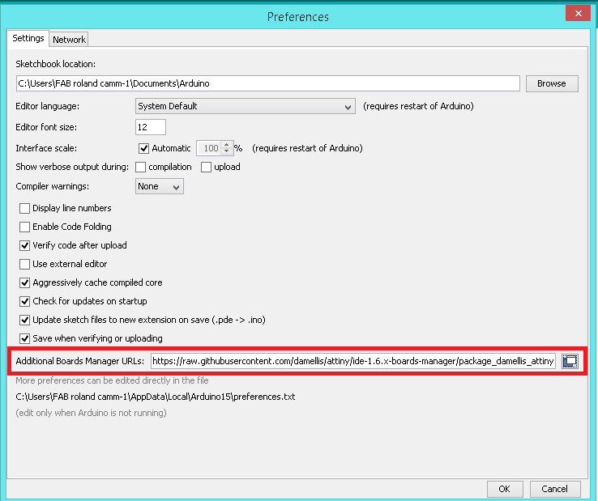

- Read a microcontroller data sheet
- Program your board to do something
- Experiment with other architectures
Introduction
This week we need to progarmme the Hello-echo board that we designed in the Electronics Design week.I have experience with the Arduino developement also i want to learn more pramming stacks so this is the best chance. in this week i wil progarmme the Echo-board with Arduino , C and also Assembly and i will document my experience here . Thank you.
Embedded System
An embedded system is a dedicated computer system designed for one or two specific functions. This system is embedded as a part of a complete device system that includes hardware, such as electrical and mechanical components. The embedded system is unlike the general-purpose computer, which is engineered to manage a wide range of processing tasks.
Microprocessor VS Microcontrollers
Microprocessor is a central processing unit (CPU) on a single chip. but in Microcontrollers it consist of CPU,Memmory Unit (RAM , ROM )and I/O's .but Microcontrollers is extremely slow when comparing Microprocessor .
In here we are Focusing on Microcontrollers .
Architectures
- Harvard architecture
- Von Neumann architecture
- CISC
- RISC
The Harvard architecture is a computer architecture with physically separate storage and signal pathways for instructions and data.so it can simultaneously use both busses.
The design of a von Neumann architecture machine is simpler than that of a Harvard architecture machine, which is also a stored-program system but has one dedicated set of address and data buses for reading data from and writing data to memory, and another set of address and data buses for instruction fetching.
Harvard architecture has separate data and instruction busses, allowing transfers to be performed simultaneously on both busses. A von Neumann architecture has only one bus which is used for both data transfers and instruction fetches, and therefore data transfers and instruction fetches must be scheduled - they can not be performed at the same time.
A complex instruction set computer processor has complex instructions that take up multiple clocks for execution. The average clock cycle per instruction (CPI) is in the range of 2 and 15.it's Performance is optimized with more focus on hardware. also It has a memory unit to implement complex instructions.CISC mainly used in Microprocessor.
A reduced instruction set computer is a computer which only uses simple commands that can be divided into several instructions which achieve low-level operation within a single CLK cycle, as its name proposes “Reduced Instruction Set”.it's performance is optimized with more focus on software. RISC mainly Used in Microcontroller.
Microcontroller Architecture Family
- PIC
- AVR
PIC(peripheral interface controller) is Initially this was developed for supporting PDP computers to control its peripheral devices, and therefore, named as a peripheral interface device. These microcontrollers are very fast and easy to execute a program compared with other microcontrollers. PIC Microcontroller architecture is based on Harvard architecture. PIC microcontrollers are very popular due to their ease of programming, wide availability, easy to interfacing with other peripherals, low cost, large user base and serial programming capability (reprogramming with flash memory), etc.
AVR is a family of microcontrollers developed by Atmel.These are modified Harvard architecture 8-bit RISC single-chip microcontrollers. AVR was one of the first microcontroller families to use on-chip flash memory for program storage, as opposed to one-time programmable ROM, EPROM, or EEPROM used by other microcontrollers at the time.
Memory & Registers
Memory is an area where code and instructions are stored.There are normally 3 types of memory present in a microcontroller. These are SRAM, FLASH, and EEPROM memories.
- SRAM is the type of memory where data must be read and written to repeatedly. This is the data will change the different code being uploaded to the AVR microcontroller circuit. By default, this is the most common and used type of memory.
- Flash memory is the memory that normally stores data that does not change. This is the program memory. It stores the part of the microcontroller program that is fixed and will always stay permanent. This is similar to the BIOS of a general-purpose computer.
- Registers are small memory elements in microcontrollers with 8 bits capacity. Registers can be accessed quickly by the ALU (Arithmetic and Logic Unit) of microcontrollers
The Flash memory has an endurance of at least 10,000 write/erase cycles. The ATtiny24A/44A/84A Program Counter (PC) is 10/11/12 bits wide, thus addressing the 1024/2048/4096 Program memory locations
Hello-Echo board
This week we need to progarmme the Hello-echo board that we designed in the Electronics Design week.
Echo board is based on the Microchip ATtiny44 . It's a 8-bit RISC based microcontroller.The Originla Design have only the UART Port and I added e a Programmable Button connected to pin PA2 with a Pull-down Resistor and LED connectd to PA3 also it's have 20hz External Resonator.
ATtiny44
It's a low power AVR® 8-bit microcontroller based on the RISC architecture.It have 12 GPIO pin's.

The Atmel ATtiny24/44/84 provides the following features: 2/4/8K bytes of in-system programmable flash, 128/256/512 bytes EEPROM, 128/256/512 bytes SRAM, 12 general purpose I/O lines, 32 general purpose working registers, an 8-bit Timer/Counter with two PWM channels, a 16-bit Timer/Counter with two PWM channels, internal and external interrupts, an 8-channel 10-bit ADC, programmable gain stage (1x, 20x) for 12 differential ADC channel pairs, a programmable watchdog timer with internal oscillator, internal calibrated oscillator, and three software selectable power saving modes
The best Guide to know about a microcontroller and Instruction set it's Datasheet.we will get all the information from the Datasheet , only problem is it's not a beginner friendly. I started Reading ATtiny44 Datasheet that i got from the Micorchip website. Here you can Download it .
For Six -Wire ISP Programming of ATtiny 44 using six pins shown in below
- SCK(Serial Clock): Programming clock, generated by the In-System Programmer (Master)
- MOSI(Master Out - Slave In ): Communication line from In-System Programmer (Master) to target AVR being programmed (Slave )
- MISO( Master In - Slave Out ): Communication line from target AVR (Slave) to In- System Programmer (Master)
- RST(Reset): To enable In-System Programming, the target AVR Reset must be kept active. To simplify this, the In-System Programmer should control the target AVR Reset
- GND(Ground): Common Ground
Pin Descriptions
- VCC
- GND
- Port B (PB3...PB0)
- RESET
- Port A (PA7...PA0)
Supply voltage
Ground
Port B is a 4-bit bi-directional I/O port with internal pull-up resistors (selected for each bit). As inputs, Port B pins that are externally pulled low will source current if the pull-up resistors are activated.so we don't need to add a pull-up resistor externaly for button's and other purpose.
Reset input. A low level on this pin for longer than the minimum pulse length will generate a reset, even if the clock is not running.a reset will just reset the programm that currently runnig .
Port A is a 8-bit bi-directional I/O port with internal pull-up resistors (selected for each bit). As inputs, Port A pins that are externally pulled low will source current if the pull-up resistors are activated
Block Diagram
Block Diagram will explain Architecture of the Microcontroller.The AVR uses a Harvard architecture, with separate memories and buses for program and data. Instructions in the program memory are executed with a single-level pipelining. While one instruction is being executed, the next instruction is pre-fetched from the program memory. The ALU supports arithmetic and logic operations between registers or between a constant and a register. Single-register operations can also be executed in the ALU. After an arithmetic operation, the status register is updated to reflect information about the result of the operation.we wil go through all the Stacks when we comes to Progarmme the chip.
Embedded Programming
There is several ways to progaramme a AVR Microcontroller. Easiest one is using Arduino IDE and there is Microchip Official tool one Atmel Studio also we have toolchain in GCC.First we are using Arduino IDE.We are using the FabTiny ISP as our Progarmmer .
Arduino
Arduino is an open-source electronics platform based on easy-to-use hardware and software.ou can tell your board what to do by sending a set of instructions to the microcontroller on the board. To do so you use the Arduino programming language (based on Wiring), and the Arduino Software (IDE), based on Processing.Anyone can use Arduino.
The Arduino system is based on the avr-gcc compiler and makes use of the standard AVR libc libraries, which are open-source C libraries, specifically written for Atmel hardware.You can downdload the Arduino IDE here.now arduino also have Online IDE.
By default the arduino software doesnt contain Attiny 44 chip librarys. We need to include the deatils manually.
In windows we need to install the SPI interface driver , you can download driver here .
- Install and Open Arduino IDE
- Open preference by clicking
File >> preference - In Additional Board Manager URls add the Following URL
- After adding the URL open Board Manager by clicking
Tools >> Board >> Board Manager - Search for ATtiny44 in the following Window.(Make sure you have Internet connection).and Install the latest version .
- Now you can select ATtiny44 under the ATtiny Microcontrollers in board Selection
- Select appropriate Clock and Programmer. 
https://raw.githubusercontent.com/damellis/attiny/ide-1.6.x-boards manager/package_damellis_attiny_index.json

We are using Fab ISP to programme the Hello-Echo board so Select the Programmer as USBtinyISP.
First we need to
Now all set , first we are going to progarmme Blink a.k.a Hello world.
Arduino Code
void setup()
{
pinMode(PA3,OUTPUT); // Set PA3 Pin as OUTPUT
}
void loop()
{
digitalWrite(PA3,HIGH); //Set PA3 ON(5v)
delay(1000); //Wait 1 sec
digitalWrite(PA3,LOW); //Set PA3 OFF(OFF)
delay(1000); //Wait 1 sec
}
Click Upload to flash the Hello-Echo Board .
LED will ON when we Press the Button.
void setup()
{
pinMode(PA3,OUTPUT); //set PA3 as output (LED)
pinMode(PA2,INPUT); //set PA2 as input (Button)
}
void loop()
{
int ButtonData = digitalRead(PA2); //store PA2 value to ButtonData variable
if(ButtonData == HIGH) //check the ButtonData is HIGH (HIGH means button is pressed)
{
digitalWrite(PA3,HIGH); //Turn on the PA3 (LED on)
}
else
{
digitalWrite(PA3,LOW); //Turn off PA3 (LED OFF)
}
}
Atmel Studio (GCC C)
Atmel Studio is the integrated development platform (IDP) for developing and debugging all AVR® and SAM microcontroller applications. The Atmel Studio 7 IDP gives you a seamless and easy-to-use environment to write, build and debug your applications written in C/C++ or assembly code. It also connects seamlessly to the debuggers, programmers and development kits that support AVR and SAM devices. (source:- microchip offical page).
In embedded c we need handle the registers.Each of the AVR Digital I/O ports is associated with three (3) I/O register. A Data Direction Register (DDRx), A Pin Register (PINx) and a Port Register (PORTx). Where x is the port A, B, C, etc.
DDRx - Port X Data Direction Register

DDRx is an 8-bit register which stores configuration information for the pins of Portx. Writing a 1 in the pin location in the DDRx makes the physical pin of that port an output pin and writing a 0 makes that pin an input pin.
Note: Each physical pin of a port is configured independently and thus a port can have some of its pins configured as input an the others as output pins.
PINx - Port X Input Pins Register
PINx is an 8-bit register that stores the logic value, the current state, of the physical pins on Portx. So to read the values on the pins of Portx, you read the values that are in its PIN register.
PORTx - Port X Data Register
PORTx is an 8-bit register which stores the logic values that currently being outputted on the physical pins of Portx if the pins are configured as output pins. So to write values to a port, you write the values to the PORT register of that port..
In Atmel Studio we are writing C code. In order to use the Atmel Studio with our Fab ISP we need to configure the studio before use.
- Debug Verison
- Release Verison
Title:- USBTiny ISP Debug.
Command :- avrdude.exe
Arguments :- -c usbtiny -p attiny44 -U flash:w:$(ProjectDir)Debug\$(TargetName).hex:i
click apply and ok to save the tool.
Title:- USBTiny ISP Release.
Command :- avrdude.exe
Arguments :- -c usbtiny -p attiny44 -U flash:w:$(ProjectDir)Release\$(TargetName).hex:i
click apply and ok to save the tool.
I created two tools for our projects os it will have separate release and debug configurations for ou program. As the names imply, we build the debug version for debugging and the release version for the final release distribution.
If don't have the Avrdude (you can check it by typing Avrdude in cmd) just download and install the WinAVR here you can download it
- Start a Project by clicking File >> New >> Project
- select C/C++ as language and Template as GCC C Executable Project give a name and click OK.
- Select the Target Microcontroller , in here we have ATtiny44.
#define F_CPU 20000000UL //Clock 20-Mhz
#include <avr/io.h>
int main(void)
{
DDRA |= (1<<3); //Set PA3 as OUTPUT
DDRA &=~ (1<<2); //Set PA2 as INPUT
while (1)
{
if(PINA & (1<<2)) //check PA2 is HIGH
{
PORTA = PORTA|(1<<3); // set PA3 as HIGH(ON)
}
else
{
PORTA &=~(1<<3); //set PA3 as LOW (OFF)
}
}
}
- For Uploading code first we need to build/compile it by using Build >> Build Soution
- After the compailation we need to flash the code in to our board

Output was not differnt with the arduino becasue we just blink the led when the button press.
Atmel Studio (Assembler)
Assembly language is an alphanumeric representation of machine code.The instructions used in writing programs in assembly language are not general but specific to the microcontroller. Each company provides a set of instructions for there microcontrollers. AVR 8-bits microcontrollers have a common instruction set.
When we code in Assembler we need the datasheet to know about the MC instruction set.
So here we are using Atmel studio to write the Assebler code .First we need to start a project that we did in the C code.After that Select the Assembler in template and Click ok.
After that Select our Target Microcontroller , we have ATtiny44.
.org 0
sbi DDRA,3
cbi DDRA,2
main:
SBIC PINA,2
sbi PORTA,3
SBIC PINA,2
RJMP main
cbi PORTA,3
RJMP main
This our Assembler code that will Turn on the led when we press the LED.i exaplin the code.
.org:- it used for set the PC(Programme Counter) in a Specific value, in here we set PC in Zerosbi:- Set bit , so heresbi DDRA,3we are set the 3rd bit of A port as 1 , so the PA3 will be OUTPUTcbi:- Clear bit , so herecbi DDRA,2we are set the 2nd bit of port as 0, os the PA2 will be INPUTmain::- this is a label name it's like a function, all the code under the label we can get by calling the label nameSBIC:- in here it will skips the next instruction depending on the I/O bit's state, so here it will skip based on thePINA 2bit'sRJMP:- Relative Jump , here it will jump into a specfic label's that we mentioned , so here it will jump to main label.
For Uploading code first we need to build/compile it by using Build >> Build Soution
After the compailation we need to flash the code in to our board
PWM-Pulse Width Modulation
PWM, is a technique for getting analog results with digital means. Digital control is used to create a square wave, a signal switched between on and off. This on-off pattern can simulate voltages in between full on (5 Volts) and off (0 Volts) by changing the portion of the time the signal spends on versus the time that the signal spends off. The duration of "on time" is called the pulse width. To get varying analog values, you change, or modulate, that pulse width. If you repeat this on-off pattern fast enough with an LED for example, the result is as if the signal is a steady voltage between 0 and 5v controlling the brightness of the LED.

In here the green lines represent a regular time period. This duration or period is the inverse of the PWM frequency. In other words, with Arduino's PWM frequency at about 500Hz, the green lines would measure 2 milliseconds each. A call to analogWrite() is on a scale of 0 - 255, such that analogWrite(255) requests a 100% duty cycle (always on), and analogWrite(127) is a 50% duty cycle (on half the time) for example. (Source :- Arduino.cc)

Not all the pin's of ATtiny44 support
i used Arduino IDE to progarmme the board .
void setup()
{
pinMode(PA7,OUTPUT); //set PA7 as OUTPUT
}
void loop()
{
for(int i=0;i<=255;i++)
{
analogWrite(PA7,i); //write "i" to PA7 Pin
}
}
In here we are using analogWrite() to give PWM signal.in digitalWrite we can only write HIGH or LOW but we need to genrate the 8-bit data get a PWM signal that's why we used analogWrite The variable dutyCycle can be set to a value between 0 and 255, whereby 0 means the pin is always off and 255 means it's always on. The problem is, that you cannot set the frequency of the output square wave. The default frequency seems to be either 250 Hz or 500 Hz, which is clearly not enough for certain use cases. To change the frequency, you have to set the appropriate flags in the Attinys registers manually.
Timer Configuration
On the Attiny84 and other Atmel chips only certain pins can be used for PWM output. Every PWM-pin is controlled by a certain timer and different chips have different timers. It's all mentioned in the datasheet . The Attiny84 has two timers called Timer0 and Timer1 and four PWM pins. The pins 5 and 6 (Arduino digital pins 8 and 7 respectively) are controlled by Timer0 and the pins 7 and 8 (Arduino digital pins 6 and 5 respectively) are controlled by Timer1.
Timer0 is used by the Arduino environment for timing functions like delay(), millis() and micros() and many libraries depend on these. So by changing the frequency of Timer0 a lot of libraries will stop working correctly.
Benchmark Test
In here we are testing to determine the performance characteristics of Our board in different Lanagues .we are testing the execution speed by turn-0ff and turn-on the led without delay.
pseudocode
Turn ON LED
Turn OFF LED
- Arduino
void setup()
{
pinMode(PA3,OUTPUT);
}
void loop()
{
digitalWrite(PA3,HIGH);
digitalWrite(PA3,LOW);
}
Uploded code with FabISP.
- log file
C:\Program Files (x86)\Arduino\arduino-builder -dump-prefs -logger=machine -hardware C:\Program Files (x86)\Arduino\hardware -hardware C:\Users\FAB roland camm-1\AppData\Local\Arduino15\packages -tools C:\Program Files (x86)\Arduino\tools-builder -tools C:\Program Files (x86)\Arduino\hardware\tools\avr -tools C:\Users\FAB roland camm-1\AppData\Local\Arduino15\packages -built-in-libraries C:\Program Files (x86)\Arduino\libraries -libraries C:\Users\FAB roland camm-1\Documents\Arduino\libraries -fqbn=attiny:avr:ATtinyX4:cpu=attiny24,clock=internal1 -ide-version=10805 -build-path C:\Users\FABROL~1\AppData\Local\Temp\arduino_build_875086 -warnings=none -build-cache C:\Users\FABROL~1\AppData\Local\Temp\arduino_cache_921379 -prefs=build.warn_data_percentage=75 -prefs=runtime.tools.arduinoOTA.path=C:\Program Files (x86)\Arduino\hardware\tools\avr -prefs=runtime.tools.avr-gcc.path=C:\Program Files (x86)\Arduino\hardware\tools\avr -prefs=runtime.tools.avrdude.path=C:\Program Files (x86)\Arduino\hardware\tools\avr -verbose C:\Users\FAB roland camm-1\Desktop\salman-faris\week8\Serial\Serial.ino
C:\Program Files (x86)\Arduino\arduino-builder -compile -logger=machine -hardware C:\Program Files (x86)\Arduino\hardware -hardware C:\Users\FAB roland camm-1\AppData\Local\Arduino15\packages -tools C:\Program Files (x86)\Arduino\tools-builder -tools C:\Program Files (x86)\Arduino\hardware\tools\avr -tools C:\Users\FAB roland camm-1\AppData\Local\Arduino15\packages -built-in-libraries C:\Program Files (x86)\Arduino\libraries -libraries C:\Users\FAB roland camm-1\Documents\Arduino\libraries -fqbn=attiny:avr:ATtinyX4:cpu=attiny24,clock=internal1 -ide-version=10805 -build-path C:\Users\FABROL~1\AppData\Local\Temp\arduino_build_875086 -warnings=none -build-cache C:\Users\FABROL~1\AppData\Local\Temp\arduino_cache_921379 -prefs=build.warn_data_percentage=75 -prefs=runtime.tools.arduinoOTA.path=C:\Program Files (x86)\Arduino\hardware\tools\avr -prefs=runtime.tools.avr-gcc.path=C:\Program Files (x86)\Arduino\hardware\tools\avr -prefs=runtime.tools.avrdude.path=C:\Program Files (x86)\Arduino\hardware\tools\avr -verbose C:\Users\FAB roland camm-1\Desktop\salman-faris\week8\Serial\Serial.ino
Using board 'ATtinyX4' from platform in folder: C:\Users\FAB roland camm-1\AppData\Local\Arduino15\packages\attiny\hardware\avr\1.0.2
Using core 'arduino' from platform in folder: C:\Program Files (x86)\Arduino\hardware\arduino\avr
Detecting libraries used...
"C:\Program Files (x86)\Arduino\hardware\tools\avr/bin/avr-g++" -c -g -Os -w -std=gnu++11 -fpermissive -fno-exceptions -ffunction-sections -fdata-sections -fno-threadsafe-statics -flto -w -x c++ -E -CC -mmcu=attiny24 -DF_CPU=1000000L -DARDUINO=10805 -DARDUINO_attiny -DARDUINO_ARCH_AVR "-IC:\Program Files (x86)\Arduino\hardware\arduino\avr\cores\arduino" "-IC:\Users\FAB roland camm-1\AppData\Local\Arduino15\packages\attiny\hardware\avr\1.0.2\variants\tiny14" "C:\Users\FABROL~1\AppData\Local\Temp\arduino_build_875086\sketch\Serial.ino.cpp" -o "nul"
Generating function prototypes...
"C:\Program Files (x86)\Arduino\hardware\tools\avr/bin/avr-g++" -c -g -Os -w -std=gnu++11 -fpermissive -fno-exceptions -ffunction-sections -fdata-sections -fno-threadsafe-statics -flto -w -x c++ -E -CC -mmcu=attiny24 -DF_CPU=1000000L -DARDUINO=10805 -DARDUINO_attiny -DARDUINO_ARCH_AVR "-IC:\Program Files (x86)\Arduino\hardware\arduino\avr\cores\arduino" "-IC:\Users\FAB roland camm-1\AppData\Local\Arduino15\packages\attiny\hardware\avr\1.0.2\variants\tiny14" "C:\Users\FABROL~1\AppData\Local\Temp\arduino_build_875086\sketch\Serial.ino.cpp" -o "C:\Users\FABROL~1\AppData\Local\Temp\arduino_build_875086\preproc\ctags_target_for_gcc_minus_e.cpp"
"C:\Program Files (x86)\Arduino\tools-builder\ctags\5.8-arduino11/ctags" -u --language-force=c++ -f - --c++-kinds=svpf --fields=KSTtzns --line-directives "C:\Users\FABROL~1\AppData\Local\Temp\arduino_build_875086\preproc\ctags_target_for_gcc_minus_e.cpp"
Compiling sketch...
"C:\Program Files (x86)\Arduino\hardware\tools\avr/bin/avr-g++" -c -g -Os -w -std=gnu++11 -fpermissive -fno-exceptions -ffunction-sections -fdata-sections -fno-threadsafe-statics -MMD -flto -mmcu=attiny24 -DF_CPU=1000000L -DARDUINO=10805 -DARDUINO_attiny -DARDUINO_ARCH_AVR "-IC:\Program Files (x86)\Arduino\hardware\arduino\avr\cores\arduino" "-IC:\Users\FAB roland camm-1\AppData\Local\Arduino15\packages\attiny\hardware\avr\1.0.2\variants\tiny14" "C:\Users\FABROL~1\AppData\Local\Temp\arduino_build_875086\sketch\Serial.ino.cpp" -o "C:\Users\FABROL~1\AppData\Local\Temp\arduino_build_875086\sketch\Serial.ino.cpp.o"
Compiling libraries...
Compiling core...
Using precompiled core
Linking everything together...
"C:\Program Files (x86)\Arduino\hardware\tools\avr/bin/avr-gcc" -w -Os -g -flto -fuse-linker-plugin -Wl,--gc-sections -mmcu=attiny24 -o "C:\Users\FABROL~1\AppData\Local\Temp\arduino_build_875086/Serial.ino.elf" "C:\Users\FABROL~1\AppData\Local\Temp\arduino_build_875086\sketch\Serial.ino.cpp.o" "C:\Users\FABROL~1\AppData\Local\Temp\arduino_build_875086/..\arduino_cache_921379\core\core_attiny_avr_ATtinyX4_cpu_attiny24,clock_internal1_0c812875ac70eb4a9b385d8fb077f54c.a" "-LC:\Users\FABROL~1\AppData\Local\Temp\arduino_build_875086" -lm
"C:\Program Files (x86)\Arduino\hardware\tools\avr/bin/avr-objcopy" -O ihex -j .eeprom --set-section-flags=.eeprom=alloc,load --no-change-warnings --change-section-lma .eeprom=0 "C:\Users\FABROL~1\AppData\Local\Temp\arduino_build_875086/Serial.ino.elf" "C:\Users\FABROL~1\AppData\Local\Temp\arduino_build_875086/Serial.ino.eep"
"C:\Program Files (x86)\Arduino\hardware\tools\avr/bin/avr-objcopy" -O ihex -R .eeprom "C:\Users\FABROL~1\AppData\Local\Temp\arduino_build_875086/Serial.ino.elf" "C:\Users\FABROL~1\AppData\Local\Temp\arduino_build_875086/Serial.ino.hex"
Sketch uses 512 bytes (25%) of program storage space. Maximum is 2048 bytes.
Global variables use 9 bytes (7%) of dynamic memory, leaving 119 bytes for local variables. Maximum is 128 bytes.
C:\Program Files (x86)\Arduino\hardware\tools\avr/bin/avrdude -CC:\Program Files (x86)\Arduino\hardware\tools\avr/etc/avrdude.conf -v -pattiny24 -cusbtiny -Uflash:w:C:\Users\FABROL~1\AppData\Local\Temp\arduino_build_875086/Serial.ino.hex:i
avrdude: Version 6.3, compiled on Jan 17 2017 at 12:00:53
Copyright (c) 2000-2005 Brian Dean, http://www.bdmicro.com/
Copyright (c) 2007-2014 Joerg Wunsch
System wide configuration file is "C:\Program Files (x86)\Arduino\hardware\tools\avr/etc/avrdude.conf"
Using Port : usb
Using Programmer : usbtiny
An error occurred while uploading the sketch
avrdude: usbdev_open(): Found USBtinyISP, bus:device: bus-0:\\.\libusb0-0001--0x1781-0x0c9f
AVR Part : ATtiny24
Chip Erase delay : 4500 us
PAGEL : P00
BS2 : P00
RESET disposition : possible i/o
RETRY pulse : SCK
serial program mode : yes
parallel program mode : yes
Timeout : 200
StabDelay : 100
CmdexeDelay : 25
SyncLoops : 32
ByteDelay : 0
PollIndex : 3
PollValue : 0x53
Memory Detail :
Block Poll Page Polled
Memory Type Mode Delay Size Indx Paged Size Size #Pages MinW MaxW ReadBack
----------- ---- ----- ----- ---- ------ ------ ---- ------ ----- ----- ---------
eeprom 65 6 4 0 no 128 4 0 4000 4500 0xff 0xff
flash 65 6 32 0 yes 2048 32 64 4500 4500 0xff 0xff
signature 0 0 0 0 no 3 0 0 0 0 0x00 0x00
lock 0 0 0 0 no 1 0 0 9000 9000 0x00 0x00
lfuse 0 0 0 0 no 1 0 0 9000 9000 0x00 0x00
hfuse 0 0 0 0 no 1 0 0 9000 9000 0x00 0x00
efuse 0 0 0 0 no 1 0 0 9000 9000 0x00 0x00
calibration 0 0 0 0 no 1 0 0 0 0 0x00 0x00
Programmer Type : USBtiny
Description : USBtiny simple USB programmer, http://www.ladyada.net/make/usbtinyisp/
avrdude: programmer operation not supported
avrdude: Using SCK period of 10 usec
avrdude: AVR device initialized and ready to accept instructions
Reading | ################################################## | 100% 0.01s
avrdude: Device signature = 0x1e9207 (probably t44)
avrdude: Expected signature for ATtiny24 is 1E 91 0B
Double check chip, or use -F to override this check.
avrdude done. Thank you.
- GCC C (Atmel Studio)
#define F_CPU 20000000UL
#include <avr/io.h>
int main(void)
{
DDRA |= (1<<3);
while(1)
{
PORTA |=(1<<3);
PORTA &=~(1<<3);
}
}
- log file
------ Build started: Project: Test, Configuration: Debug AVR ------
Build started.
Project "Test.cproj" (default targets):
Target "PreBuildEvent" skipped, due to false condition; ('$(PreBuildEvent)'!='') was evaluated as (''!='').
Target "CoreBuild" in file "C:\Program Files (x86)\Atmel\Studio\7.0\Vs\Compiler.targets" from project "C:\Users\FAB roland camm-1\Documents\Atmel Studio\7.0\Test\Test\Test.cproj" (target "Build" depends on it):
Using "RunCompilerTask" task from assembly "C:\Program Files (x86)\Atmel\Studio\7.0\Extensions\Application\AvrGCC.dll".
Task "RunCompilerTask"
Shell Utils Path C:\Program Files (x86)\Atmel\Studio\7.0\shellUtils
C:\Program Files (x86)\Atmel\Studio\7.0\shellUtils\make.exe all --jobs 4 --output-sync
Building file: .././main.c
Invoking: AVR/GNU C Compiler : 5.4.0
"C:\Program Files (x86)\Atmel\Studio\7.0\toolchain\avr8\avr8-gnu-toolchain\bin\avr-gcc.exe" -x c -funsigned-char -funsigned-bitfields -DDEBUG -I"C:\Program Files (x86)\Atmel\Studio\7.0\Packs\atmel\ATtiny_DFP\1.3.147\include" -O1 -ffunction-sections -fdata-sections -fpack-struct -fshort-enums -g2 -Wall -mmcu=attiny44 -B "C:\Program Files (x86)\Atmel\Studio\7.0\Packs\atmel\ATtiny_DFP\1.3.147\gcc\dev\attiny44" -c -std=gnu99 -MD -MP -MF "main.d" -MT"main.d" -MT"main.o" -o "main.o" ".././main.c"
Finished building: .././main.c
Building target: Test.elf
Invoking: AVR/GNU Linker : 5.4.0
"C:\Program Files (x86)\Atmel\Studio\7.0\toolchain\avr8\avr8-gnu-toolchain\bin\avr-gcc.exe" -o Test.elf main.o -Wl,-Map="Test.map" -Wl,--start-group -Wl,-lm -Wl,--end-group -Wl,--gc-sections -mmcu=attiny44 -B "C:\Program Files (x86)\Atmel\Studio\7.0\Packs\atmel\ATtiny_DFP\1.3.147\gcc\dev\attiny44"
Finished building target: Test.elf
"C:\Program Files (x86)\Atmel\Studio\7.0\toolchain\avr8\avr8-gnu-toolchain\bin\avr-objcopy.exe" -O ihex -R .eeprom -R .fuse -R .lock -R .signature -R .user_signatures "Test.elf" "Test.hex"
"C:\Program Files (x86)\Atmel\Studio\7.0\toolchain\avr8\avr8-gnu-toolchain\bin\avr-objcopy.exe" -j .eeprom --set-section-flags=.eeprom=alloc,load --change-section-lma .eeprom=0 --no-change-warnings -O ihex "Test.elf" "Test.eep" || exit 0
"C:\Program Files (x86)\Atmel\Studio\7.0\toolchain\avr8\avr8-gnu-toolchain\bin\avr-objdump.exe" -h -S "Test.elf" > "Test.lss"
"C:\Program Files (x86)\Atmel\Studio\7.0\toolchain\avr8\avr8-gnu-toolchain\bin\avr-objcopy.exe" -O srec -R .eeprom -R .fuse -R .lock -R .signature -R .user_signatures "Test.elf" "Test.srec"
"C:\Program Files (x86)\Atmel\Studio\7.0\toolchain\avr8\avr8-gnu-toolchain\bin\avr-size.exe" "Test.elf"
text data bss dec hex filename
64 0 0 64 40 Test.elf
Done executing task "RunCompilerTask".
Using "RunOutputFileVerifyTask" task from assembly "C:\Program Files (x86)\Atmel\Studio\7.0\Extensions\Application\AvrGCC.dll".
Task "RunOutputFileVerifyTask"
Program Memory Usage : 64 bytes 1.6 % Full
Data Memory Usage : 0 bytes 0.0 % Full
Done executing task "RunOutputFileVerifyTask".
Done building target "CoreBuild" in project "Test.cproj".
Target "PostBuildEvent" skipped, due to false condition; ('$(PostBuildEvent)' != '') was evaluated as ('' != '').
Target "Build" in file "C:\Program Files (x86)\Atmel\Studio\7.0\Vs\Avr.common.targets" from project "C:\Users\FAB roland camm-1\Documents\Atmel Studio\7.0\Test\Test\Test.cproj" (entry point):
Done building target "Build" in project "Test.cproj".
Done building project "Test.cproj".
Build succeeded.
========== Build: 1 succeeded or up-to-date, 0 failed, 0 skipped ==========
avrdude.exe: AVR device initialized and ready to accept instructions
Reading | ################################################## | 100% 0.01s
avrdude.exe: Device signature = 0x1e9207
avrdude.exe: NOTE: FLASH memory has been specified, an erase cycle will be performed
To disable this feature, specify the -D option.
avrdude.exe: erasing chip
avrdude.exe: reading input file "C:\Users\FAB roland camm-1\Documents\Atmel Studio\7.0\Test\Test\Debug\Test.hex"
avrdude.exe: writing flash (64 bytes):
Writing | ################################################## | 100% 0.13s
avrdude.exe: 64 bytes of flash written
avrdude.exe: verifying flash memory against C:\Users\FAB roland camm-1\Documents\Atmel Studio\7.0\Test\Test\Debug\Test.hex:
avrdude.exe: load data flash data from input file C:\Users\FAB roland camm-1\Documents\Atmel Studio\7.0\Test\Test\Debug\Test.hex:
avrdude.exe: input file C:\Users\FAB roland camm-1\Documents\Atmel Studio\7.0\Test\Test\Debug\Test.hex contains 64 bytes
avrdude.exe: reading on-chip flash data:
Reading | ################################################## | 100% 0.09s
avrdude.exe: verifying ...
avrdude.exe: 64 bytes of flash verified
avrdude.exe: safemode: Fuses OK
avrdude.exe done. Thank you.
- Assembly
.org 0
sbi DDRA,3
main:
sbi PORTA,3
cbi PORTA,3
RJMP main
- log file
------ Build started: Project: testAssem, Configuration: Debug AVR ------
Build started.
Project "testAssem.asmproj" (default targets):
Target "PreBuildEvent" skipped, due to false condition; ('$(PreBuildEvent)'!='') was evaluated as (''!='').
Target "CoreBuild" in file "C:\Program Files (x86)\Atmel\Studio\7.0\Vs\Assembler.targets" from project "C:\Users\FAB roland camm-1\Documents\Atmel Studio\7.0\testAssem\testAssem\testAssem.asmproj" (target "Build" depends on it):
Task "RunAssemblerTask"
C:\Program Files (x86)\Atmel\Studio\7.0\toolchain\avr8\avrassembler\avrasm2.exe -fI -o "testAssem.hex" -m "testAssem.map" -l "testAssem.lss" -S "testAssem.tmp" -W+ie -I"C:/Program Files (x86)\Atmel\Studio\7.0\Packs\atmel\ATtiny_DFP\1.3.147\avrasm\inc" -itn44def.inc -d "C:\Users\FAB roland camm-1\Documents\Atmel Studio\7.0\testAssem\testAssem\Debug\testAssem.obj" "C:\Users\FAB roland camm-1\Documents\Atmel Studio\7.0\testAssem\testAssem\main.asm" -I "C:\Program Files (x86)\Atmel\Studio\7.0\toolchain\avr8\avrassembler\Include"
AVRASM: AVR macro assembler 2.2.7 (build 69 Jul 26 2017 16:25:06)
Copyright (C) 1995-2017 ATMEL Corporation
[builtin](2): Including file 'C:/Program Files (x86)\Atmel\Studio\7.0\Packs\atmel\ATtiny_DFP\1.3.147\avrasm\inc\tn44def.inc'
[builtin](2): Including file 'C:/Program Files (x86)\Atmel\Studio\7.0\Packs\atmel\ATtiny_DFP\1.3.147\avrasm\inc\tn44def.inc'
"ATtiny44" memory use summary [bytes]:
Segment Begin End Code Data Used Size Use%
---------------------------------------------------------------
[.cseg] 0x000000 0x000008 8 0 8 4096 0.2%
[.dseg] 0x000060 0x000060 0 0 0 256 0.0%
[.eseg] 0x000000 0x000000 0 0 0 256 0.0%
Assembly complete, 0 errors. 0 warnings
Done executing task "RunAssemblerTask".
Done building target "CoreBuild" in project "testAssem.asmproj".
Target "PostBuildEvent" skipped, due to false condition; ('$(PostBuildEvent)' != '') was evaluated as ('' != '').
Target "Build" in file "C:\Program Files (x86)\Atmel\Studio\7.0\Vs\Avr.common.targets" from project "C:\Users\FAB roland camm-1\Documents\Atmel Studio\7.0\testAssem\testAssem\testAssem.asmproj" (entry point):
Done building target "Build" in project "testAssem.asmproj".
Done building project "testAssem.asmproj".
Build succeeded.
========== Build: 1 succeeded or up-to-date, 0 failed, 0 skipped ==========
avrdude.exe: AVR device initialized and ready to accept instructions
Reading | ################################################## | 100% 0.01s
avrdude.exe: Device signature = 0x1e9207
avrdude.exe: NOTE: FLASH memory has been specified, an erase cycle will be performed
To disable this feature, specify the -D option.
avrdude.exe: erasing chip
avrdude.exe: reading input file "C:\Users\FAB roland camm-1\Documents\Atmel Studio\7.0\testAssem\testAssem\Debug\testAssem.hex"
avrdude.exe: writing flash (8 bytes):
Writing | ################################################## | 100% 0.02s
avrdude.exe: 8 bytes of flash written
avrdude.exe: verifying flash memory against C:\Users\FAB roland camm-1\Documents\Atmel Studio\7.0\testAssem\testAssem\Debug\testAssem.hex:
avrdude.exe: load data flash data from input file C:\Users\FAB roland camm-1\Documents\Atmel Studio\7.0\testAssem\testAssem\Debug\testAssem.hex:
avrdude.exe: input file C:\Users\FAB roland camm-1\Documents\Atmel Studio\7.0\testAssem\testAssem\Debug\testAssem.hex contains 8 bytes
avrdude.exe: reading on-chip flash data:
Reading | ################################################## | 100% 0.01s
avrdude.exe: verifying ...
avrdude.exe: 8 bytes of flash verified
avrdude.exe: safemode: Fuses OK
avrdude.exe done. Thank you.
Conclusion
Arduino is have very large foot print comparing other's
These are the HEX files that genarated by Arduino,GCC C and ASSEMBLY respectively.I used DSO but i got same result in every code, i expected some big variations but did't got anything.
Experiment with other architectures
In this week group assignment is to try out some other acchtecture other than AVR microcontrollers.
ARM Architecture
ARM, previously Advanced RISC Machine, originally Acorn RISC Machine, is a family of reduced instruction set computing (RISC) architectures for computer processors, configured for various environments.Processors that have a RISC architecture typically require fewer transistors than those with a complex instruction set computing (CISC) architecture (such as the x86 processors found in most personal computers), which improves cost, power consumption, and heat dissipation. These characteristics are desirable for light, portable, battery-powered device-including smartphones, laptops and tablet computers, and other embedded systems.] For supercomputers, which consume large amounts of electricity, ARM could also be a power-efficient solution.
Most of our mobile phones are based on ARM and now it used on server's and super controllers.Raspberry Pi is Single board computer that based on ARM.
STM32
STM32 is a family of 32-bit microcontroller integrated circuits by STMicroelectronics. The STM32 chips are grouped into related series that are based around the same 32-bit ARM processor core, such as the Cortex-M7F, Cortex-M4F, Cortex-M3, Cortex-M0+, or Cortex-M0. Internally, each microcontroller consists of the processor core, static RAM memory, flash memory, debugging interface, and various peripherals.
In here Fablab Kochi we have the STM32F401 series Nucleo development boards.it's a part of the STM32 Dynamic Efficiency™ device range. These devices offer the best balance of dynamic power consumption (in run mode) and processing performance, while integrating a high number of added-value features in packages as small as 3 x 3 mm.
The MCUs deliver the performance of Cortex®-M4 core with floating point unit, running at 84 MHz, while achieving outstandingly low power consumption values in run and stop modes.
- Performance: At 84 MHz, the STM32F401 delivers 105 DMIPS/285 CoreMark performance executing from Flash memory, with 0-wait states using ST’s ART Accelerator. The DSP instructions and the floating point unit enlarge the range of addressable applications.
- Power efficiency: ST’s 90 nm process, ART Accelerator and the dynamic power scaling enables the current consumption in run mode and executing from Flash memory to be as low as 128 µA/MHz. In Stop mode, the power consumption can be as low as 9 µA.
- Integration :The STM32F401 portfolio provides from 128 to 512 Kbytes of Flash, 96 Kbytes of SRAM. The available packages range from 49 to 100 pins.
- 3x USARTs running at up to 10.5 Mbit/s,
- 4x SPI running at up to 42 Mbit/s,
- 3x I²C,
- 1x SDIO,
- 1x USB 2.0 OTG full speed,
- 2x full duplex I²S up to up to 32-bit/192KHz,
- 12-bit ADC reaching 2.4 MSPS,
- 10 timers, 16- and 32-bit, running at up to 84 MHz
You can Download the Sheet from Here.